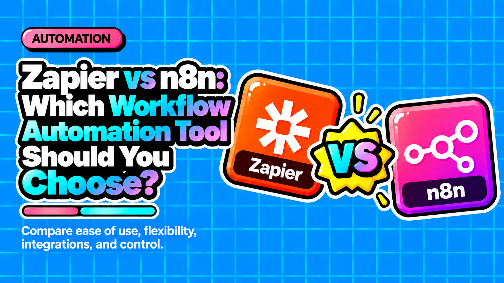

Zapier vs n8n: Which Workflow Automation Tool Should You Choose?

Direct answer: Zapier and n8n are both workflow automation platforms built for different users and budgets. Zapier charges per task and suits non-technical teams needing fast SaaS integrations. n8n charges per execution, supports self-hosting, and wins on cost and flexibility at scale. The choice is less about features and more about who owns your infrastructure.
- Zapier charges per action step, n8n charges per full workflow run, making n8n dramatically cheaper at volume.
- n8n can be self-hosted for free under its fair-code license, giving full data residency control that Zapier cannot offer.
- Zapier has 8,000+ pre-built connectors, but n8n's HTTP Request node makes its effective integration ceiling unlimited.
- If your Zapier bill exceeds $200 per month, you are likely overpaying and n8n is worth evaluating immediately.
- n8n ships built-in error workflows and manual execution replay, giving teams far more debugging control than Zapier provides.
Questions this article answers
- How do Zapier and n8n differ on pricing and cost at scale?
- Can you self-host n8n, and what does that mean for data privacy?
- Which platform gives teams better error handling and debugging tools?
- How do Zapier and n8n compare on integration libraries and API flexibility?
- Which platform handles complex workflow logic and custom code better?
- When should you actually choose Zapier, and when should you switch to n8n?
- Plus 6 FAQs answered below
How do Zapier and n8n differ on pricing and cost at scale?
Zapier bills per individual action step, while n8n bills per full workflow execution regardless of step count. At volume, n8n is almost always the cheaper option.
The structural pricing gap is the most important thing to understand before choosing either platform.
Zapier's model: Every action step inside a Zap counts as one billable task. A 5-step Zap running 1,000 times consumes 5,000 tasks. The entry Pro plan starts at $19.99/month for 750 tasks. At 10,000 monthly executions across 8-step workflows, Zapier bills can reach $250 to $400+ per month in task bundles.
n8n's model: The entire workflow run counts as one execution, no matter how many nodes it passes through. A 20-step workflow running 1,000 times costs 1,000 executions. n8n Cloud starts at roughly 20 euros per month for 2,500 executions, and that same 10,000-execution scenario lands around $50/month on the n8n Pro cloud plan.
At meaningful volume, the math almost always favours n8n.
Can you self-host n8n, and what does that mean for data privacy?
n8n can be self-hosted on a VPS, Docker, or Kubernetes under its free fair-code Community Edition. Zapier is cloud-only with no self-host option and no data-residency control.
Zapier runs every Zap on its own managed servers. The upside is zero operational overhead, but you have no control over where your data lives or who can access it.
n8n supports deployment on virtually any infrastructure:
- VPS or dedicated server
- Docker containers
- Heroku
- Private cloud or Kubernetes
The Community Edition is free under its fair-code license. Typical infrastructure cost runs $10 to $50 per month all-in. For teams that prefer a managed experience, n8n Cloud runs on Azure in Frankfurt, providing EU data residency for GDPR compliance.
Self-hosting means your workflow data, execution logs, and API credentials never leave your own infrastructure. That is the deciding factor for teams handling sensitive or regulated data.
Which platform gives teams better error handling and debugging tools?
n8n offers significantly more control, including built-in error workflows, configurable retries, dedicated error branches, and manual execution replay. Zapier provides auto-retry and email notifications but limited branching on failure.
Zapier error handling:
- Automatic retry on temporary failures
- Email notifications when a Zap fails
- Limited control beyond re-running a Zap manually
- No native branching logic on error paths
n8n error handling:
- Built-in error workflows that keep runs resilient instead of stopping mid-run
- Automatic retries with configurable delays
- Dedicated error branches inside workflows
- Manual execution replay: inspect the exact input and output at every node when something breaks
- On self-hosted instances, integration with external monitoring tools like Datadog or Prometheus for enterprise-grade observability
For production workflows where a silent failure costs money or compliance risk, n8n's debugging tools are meaningfully superior.
How do Zapier and n8n compare on integration libraries and API flexibility?
Zapier leads with 8,000+ pre-built connectors maintained by its team. n8n has around 1,000+ integrations, but its HTTP Request node makes the effective ceiling unlimited for any REST API.
Zapier has 8,000+ pre-built app connectors as of 2026. This is the broadest marketplace in the automation space, covering virtually every mainstream SaaS tool with plug-and-play connectors maintained by Zapier's team.
n8n offers approximately 400 native core nodes plus 600+ community packages, totaling 1,000+ pre-built integrations. The gap narrows in practice because:
- The HTTP Request node connects to any REST API without needing a dedicated connector
- Community packages extend coverage to niche tools
- Custom nodes can be built and imported on self-hosted instances
Where each wins:
- Mainstream tools like Slack, HubSpot, Salesforce, Gmail, Notion, and Airtable: both platforms have solid native support
- Niche or legacy apps with no public API wrapper: Zapier wins on ready-made connectors
- Custom APIs, internal tools, or anything with a REST endpoint: n8n wins on flexibility
Which platform handles complex workflow logic and custom code better?
n8n is built for complexity. Full JavaScript and Python nodes, loop nodes, sub-workflows, and IF/Switch branching are available on every plan including the free self-hosted tier. Zapier locks conditional branching behind a paid plan and restricts custom code.
Zapier's approach to code and logic:
- Guided, form-based UI designed for non-technical operators
- Most users are productive within an hour
- "Code by Zapier" allows Python or JavaScript but with restrictions that make it unsuitable for production custom logic
- Conditional branching via Paths is locked behind the $49/month Professional plan
n8n's approach to code and logic:
- Visual canvas that is also code-ready
- Full JavaScript and Python Function nodes available on all plans
- Loop nodes, sub-workflows, and parallel execution supported natively
- IF/Switch branching available on every plan, including self-hosted free
- On self-hosted instances, npm packages can be imported directly inside workflows
For teams building AI-agent workflows that require memory, tool use, and local model execution, n8n is the only realistic option between the two.
When should you actually choose Zapier, and when should you switch to n8n?
Zapier wins for non-technical teams running under roughly 5,000 tasks per month on standard SaaS stacks. n8n wins when costs scale, data must stay on your own infrastructure, or workflows require complex branching and custom logic.
Choose Zapier when:
- Your team has no technical operator and needs automation running in under an hour
- Monthly usage stays below roughly 5,000 tasks
- Your stack is entirely mainstream: HubSpot, Slack, Gmail, Stripe, Calendly
- Setup speed and a massive ready-made connector library matter more than cost control
Choose n8n when:
- Your Zapier bill is already over $200 per month (at that point you are almost certainly overpaying)
- Workflows touch sensitive, regulated, or proprietary data that cannot live on third-party servers
- You need GDPR or CCPA compliance with verifiable data residency
- Workflows require multi-branch logic, custom API calls, or code that goes beyond simple transformations
- You are building AI-agent workflows with memory, tool use, or local model execution
The decision is less a feature comparison and more a philosophical one: do you pay for convenience, or do you own your infrastructure?
Frequently asked questions
Is n8n really free to use?
The n8n Community Edition is free to self-host under its fair-code license. You only pay for the underlying server infrastructure, which typically costs $10 to $50 per month. n8n Cloud is a paid managed option starting at roughly 20 euros per month.
Does Zapier offer a self-hosted or on-premise version?
No. Zapier is a fully cloud-hosted platform. There is no self-host option, no data-residency control, and no on-premise deployment path. All Zaps run on Zapier's managed servers.
Which platform is better for GDPR compliance?
n8n is the stronger choice for GDPR compliance. Self-hosted deployments keep all data on your own infrastructure. n8n Cloud also runs on Azure in Frankfurt, providing EU data residency. Zapier offers no data-residency control.
Can non-technical users set up n8n workflows?
n8n has a visual canvas interface that many non-technical users can navigate, but it has a steeper learning curve than Zapier's form-based guided setup. Zapier is the faster option for teams with no technical operator. n8n becomes more accessible once a technical operator sets up the initial infrastructure.
At what point does switching from Zapier to n8n make financial sense?
A useful rule of thumb from the comparison: if your Zapier bill exceeds $200 per month, you are likely overpaying. At 10,000 monthly executions across multi-step workflows, Zapier can cost $250 to $400+ per month while the same workload on n8n Pro Cloud runs around $50 per month.
Does n8n support AI agent workflows?
Yes. n8n supports AI-agent workflows that require memory, tool use, and local model execution. This makes it the more capable option between the two platforms for teams building LLM-powered automation pipelines.
Sources
Choosing between Zapier and n8n for your own GTM stack?
Contact →